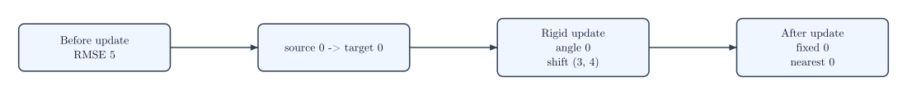
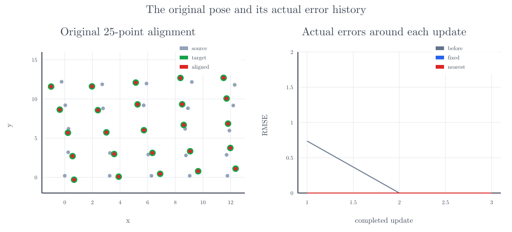
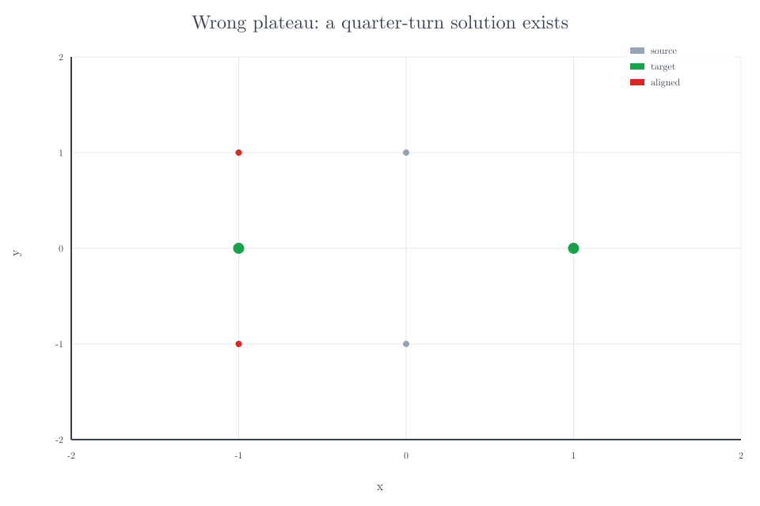
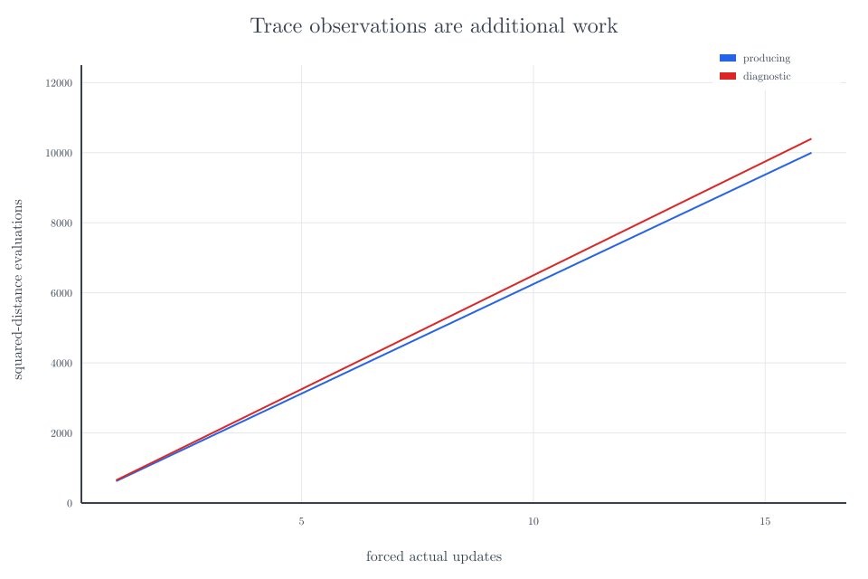

Iterative Closest Point: Actual Matches, Rigid Updates and Local Failure
Abstract
Given two planar point clouds in different coordinate frames, find a rotation and translation that align the source with nearby target points without knowing their correspondence. Independent nearest matches can conflict or collapse onto one target, making this a local search rather than a pose-recovery guarantee. We derive the planar rigid update, inspect actual correspondence histories, preserve the original known-pose example and show an exact local failure. Returned RMSE now measures the final updated working cloud, correcting the old pre-update value. Every figure and result is produced by a complete C++ program.
Start with one point and the error-timing bug
A source point (0,0) and target (3,4) start five units apart. One rigid update can translate the source to the target; rotation is unidentifiable from one point, and the zero-covariance computation here chooses zero. The actual history records pre-update RMSE five and post-update RMSE zero. The former implementation returned five alongside the new translation, which described different states. The corrected endpoint error is zero. This is a timing correction, not evidence that a one-point cloud can identify a unique rigid pose.
#include <dm/dm.hpp>
int main() {
std::filesystem::create_directories("build");
const auto h = dm::geometry::icp_trace({{0, 0}}, {{3, 4}}, 1);
const auto &s = h.steps.front();
std::print("| observation | value |\n| --- | ---: |\n| actual selected target index | {} |\n| " "pre-update RMSE | {} |\n| post fixed-match RMSE | {} |\n| post nearest-target RMSE | {} " "|\n| returned final RMSE | {} |\n| translation x | {} |\n| translation y | {} |\n",
s.target_indices[0], s.pre_rmse, s.post_fixed_rmse,
s.post_nearest_rmse, h.run.result.rmse,
h.run.result.translation.x, h.run.result.translation.y);
dm::geometry::icp_step_diagram(h).save_svg("build/icp_tiny.svg");
}| observation | value |
|---|---|
| actual selected target index | 0 |
| pre-update RMSE | 5 |
| post fixed-match RMSE | 0 |
| post nearest-target RMSE | 0 |
| returned final RMSE | 0 |
| translation x | 3 |
| translation y | 4 |

Directed nearest matching is not a permutation
For source points \(p_i\), transformed working points \(x_i=Rp_i+t\), and nonempty target \(q_j\), the directed objective is
Matches are independent: several source points can select the same target, and target points need not be used. This is neither a one-to-one assignment nor a symmetric cloud distance. Source and target counts can differ. There is no trimming, robust loss, rejection threshold, spatial index or initial-pose option. To supply a coarse initial pose, explicitly transform the source first; the returned pose then maps that supplied cloud, not the earlier original frame. Strict-less ascending target scans resolve computed distance ties by first index.
Derive the planar rigid update
Freeze the actual nearest matches \(y_i=q_{j_i}\) for current working points \(x_i\). Center them at \(\bar x,\bar y\) and write \(a_i=x_i-\bar x\), \(b_i=y_i-\bar y\). For a chosen angle, differentiating the squared loss in translation gives \(d=\bar y-R(\theta)\bar x\). The remaining loss is a constant minus twice the centered alignment score:
Thus \(\theta=\operatorname{atan2}(B,A)\) maximizes the score when \((A,B)\ne(0,0)\). At zero covariance every angle has the same frozen-match loss; the implementation retains the computed atan2 choice. The update is \(x_i\leftarrow R(\theta)x_i+d\), with accumulated pose \(R_{new}=R(\theta)R_{old}\), \(t_{new}=R(\theta)t_{old}+d\).
In exact arithmetic, keeping the current matches gives an upper bound on the new nearest-target objective, and the rigid minimization cannot increase the old frozen-match loss:
This proves monotone convergence of the nonnegative objective values, not unique correspondence, convergence to the true pose or a global optimum. Floating rounding can cause tiny increases. The trace reports all three errors from actual working points; its extra observations never drive the solve.
Preserve the original known-pose example
The original 25 points form a slightly perturbed five-by-five grid. The target is their transform by angle .12 radians and translation (.7,−.5). The original report's program did not shuffle its target despite saying so; this program preserves its actual ordering. The existing independent native tests do shuffle the target for 30 additional known-pose cases. This generated geometric study needs no unrelated dataset.
#include <dm/dm.hpp>
int main() {
std::filesystem::create_directories("build");
const auto source = dm::geometry::icp_example_source();
const auto target =
dm::geometry::icp_transform_points(source, .12, {.7, -.5});
const auto h = dm::geometry::icp_trace(source, target, 100, 1e-15);
std::print("| step | before RMSE | after fixed RMSE | after nearest RMSE |\n| ---: | ---: | ---: | ---: " "|\n");
std::vector<double> steps, before, fixed, nearest;
for (std::size_t i = 0; i < h.steps.size(); ++i) {
const auto &s = h.steps[i];
std::print("| {} | {:.12g} | {:.12g} | {:.12g} |\n", i + 1, s.pre_rmse,
s.post_fixed_rmse, s.post_nearest_rmse);
steps.push_back(i + 1);
before.push_back(s.pre_rmse);
fixed.push_back(s.post_fixed_rmse);
nearest.push_back(s.post_nearest_rmse);
}
std::print("Applied angle .12, shift (.7, -.5); recovered angle {:.12g}, shift ({:.12g}, {:.12g}), " "final RMSE {:.12g}, updates {}.\n",
h.run.result.angle, h.run.result.translation.x,
h.run.result.translation.y, h.run.result.rmse,
h.run.result.iterations);
auto cloud = dm::geometry::icp_alignment_plot(source, target, h.run);
cloud.title("Original 25-point alignment").y_limits(-2, 16);
auto errors = dm::graphics::RPlot::create();
errors.line(steps, before, "before", {100, 116, 139}, 2).line(steps, fixed,
"fixed",
{37, 99, 235},
2).line(
steps, nearest, "nearest", {220, 38, 38}, 2).title(
"Actual errors around each update").x_label("completed update").y_label(
"RMSE").y_limits(0, 2);
auto layout = dm::graphics::RLayout::create(1, 2);
layout.add(cloud).add(errors).size(1100, 500).title("The original pose and its actual error history").fit_panels().save_svg("build/icp_original.svg");
}| step | before RMSE | after fixed RMSE | after nearest RMSE |
|---|---|---|---|
| 1 | 0.736877022904 | 2.17932000576e-15 | 2.17932000576e-15 |
| 2 | 2.17932000576e-15 | 1.39127435649e-15 | 1.39127435649e-15 |
| 3 | 1.39127435649e-15 | 1.3225204127e-15 | 1.3225204127e-15 |
Applied angle .12, shift (.7, -.5); recovered angle 0.12, shift (0.7, -0.5), final RMSE 1.3225204127e-15, updates 3.

A plateau can be the wrong alignment
Take the vertical source (0,−1),(0,1) and horizontal target (−1,0),(1,0). Both initial computed distances tie, so both source points choose target zero. The centered matched target is zero, leaving zero covariance. The first update translates the source left by one and keeps angle zero. Its error is one; the same correspondences then repeat. Yet a quarter turn maps the original source onto both target points and has near-zero numerical error. ICP's actual stop therefore fails to recover an available exact rigid alignment.
The stop is specifically a strict absolute change between consecutive PRE-update
RMSE values, tested after applying an update. Retaining that legacy rule
preserves ordinary finite-input poses and update counts. It does not test the
fixed-match minimizer's uniqueness or the parameter step. Zero tolerance forces
the requested budget even at an unchanged cloud; the first pre-error has no
earlier finite comparison. PreUpdatePlateau, IterationLimit and EmptyCloud
name those different outcomes without a convergence guarantee.
#include <dm/dm.hpp>
int main() {
std::filesystem::create_directories("build");
const std::vector<dm::geometry::Point2D> source{{0, -1}, {0, 1}}, target{
{-1, 0}, {1, 0}
};
const auto h = dm::geometry::icp_trace(source, target, 10, 1e-14);
const auto quarter =
dm::geometry::icp_transform_points(source, std::acos(-1.) / 2);
const auto candidate = dm::geometry::icp_run(quarter, target, 0);
std::print("| control | observed |\n| --- | ---: |\n| initial target indices | {} {} |\n| returned " "angle | {} |\n| returned shift x | {} |\n| plateau updates | {} |\n| returned final RMSE | " "{} |\n| explicit quarter-turn RMSE | {:.12g} |\n",
h.steps.front().target_indices[0],
h.steps.front().target_indices[1], h.run.result.angle,
h.run.result.translation.x, h.run.result.iterations,
h.run.result.rmse, candidate.result.rmse);
if (h.run.stop != dm::geometry::IcpStop::PreUpdatePlateau ||
h.run.result.rmse != 1)
throw std::runtime_error("local plateau control");
auto p = dm::geometry::icp_alignment_plot(source, target, h.run);
p.title("Wrong plateau: a quarter-turn solution exists").x_limits(-2, 2).y_limits(-2, 2).save_svg("build/icp_local.svg");
}| control | observed |
|---|---|
| initial target indices | 0 0 |
| returned angle | 0 |
| returned shift x | -1 |
| plateau updates | 3 |
| returned final RMSE | 1 |
| explicit quarter-turn RMSE | 6.12323399574e-17 |

Work and complete admission policies
For K updates, N source points and M targets, the brute-force producing nearest search evaluates K·N·M squared distances, while K·N working-point updates are counted separately. Centroids, covariance, trigonometry, validation, comparisons, copies and allocations are outside these selected counts. Ordinary execution adds one N·M final-error observation. Capture adds N fixed-match plus N·M fresh nearest distances after every update; those are explicitly diagnostic work. There is no repeated-prefix solve used to manufacture a history.
Input must have finite coordinates, finite nonnegative tolerance and a nonnegative integer budget. Complete validation precedes input/working copies. A finite input can overflow subtraction, squared distances, sums, covariance or pose updates; checked arithmetic throws, without automatic rescaling. Small quantities can underflow or lose precision. Empty inputs keep the legacy identity/zero-RMSE convention, which says nothing about fit; zero budget on two nonempty clouds instead reports the real initial directed error.
New run/trace policies default to one million combined source-plus-target points
and one million logical history entries. Zero disables either optional cap. Each
captured step costs 1+5N units: one record, two coordinates per before point,
one chosen index and two coordinates per after point. The complete step is
admitted before its producing nearest pass, copies or update. Excluded are input
copies, ordinary/transient arrays, final output cloud/result/work, scalar
metadata, capacity and byte/peak RAM. Untraced execution ignores the history
cap; the legacy icp entry point disables both optional caps. Exceptions return
no partial trace. All returned clouds and records own their values.
#include <dm/dm.hpp>
int main() {
std::filesystem::create_directories("build");
const auto source = dm::geometry::icp_example_source();
const auto target =
dm::geometry::icp_transform_points(source, .12, {.7, -.5});
std::vector<double> budgets, producing, observed;
std::print("| forced updates | producing distances | trace diagnostic distances | point updates | " "logical step entries |\n| ---: | ---: | ---: | ---: | ---: |\n");
for (int k : {1, 2, 4, 8, 16}) {
const auto h = dm::geometry::icp_trace(source, target, k, 0);
const auto &w = h.run.work;
if (w.distance_evaluations != std::size_t(k) * 625 ||
w.diagnostic_distance_evaluations != std::size_t(k) * 650 ||
w.point_updates != std::size_t(k) * 25)
throw std::runtime_error("work identity");
std::print("| {} | {} | {} | {} | {} |\n", k, w.distance_evaluations,
w.diagnostic_distance_evaluations, w.point_updates,
h.steps.size() * 126);
budgets.push_back(k);
producing.push_back(w.distance_evaluations);
observed.push_back(w.diagnostic_distance_evaluations);
}
const auto tiny =
dm::geometry::icp_trace({{0, 0}}, {{1, 0}}, 2, 0, {2, 12});
try {
(void) dm::geometry::icp_trace({{0, 0}}, {{1, 0}}, 2, 0, {2, 11});
throw std::runtime_error("cap accepted");
} catch (const std::length_error &) {
std::print("Two one-point steps admit 12 logical units; cap 11 is rejected.\n");
}
auto p = dm::graphics::RPlot::create();
p.line(budgets, producing, "producing", {37, 99, 235}, 2).line(
budgets, observed, "diagnostic", {220, 38, 38}, 2).title(
"Trace observations are additional work").x_label(
"forced actual updates").y_label("squared-distance evaluations").y_limits(0, 12500).save_svg("build/icp_work.svg");
}| forced updates | producing distances | trace diagnostic distances | point updates | logical step entries |
|---|---|---|---|---|
| 1 | 625 | 650 | 25 | 126 |
| 2 | 1250 | 1300 | 50 | 252 |
| 4 | 2500 | 2600 | 100 | 504 |
| 8 | 5000 | 5200 | 200 | 1008 |
| 16 | 10000 | 10400 | 400 | 2016 |
Two one-point steps admit 12 logical units; cap 11 is rejected.

What the checks establish
Native sanitizer tests inspect every actual match, rigid update, accumulated pose and all three errors over 500 generated registrations. They compare errors with independent widened accumulation and check the two exact monotonic inequalities with numerical tolerances. The original shuffled known-pose and error-profile tests pass. One-point final-error/zero-budget controls, strict plateau versus forced budgets, many-to-one ties, complete quotas, ownership, invalid input and arithmetic overflow are tested separately. Frozen comparisons preserve 2000 legacy poses and update counts within 1e-13, while intentionally correcting the returned error's timing. An independent Fraction/70-digit Decimal oracle verifies 259 cases, 1295 actual steps and 7450 selected matches, comparing fixed-match losses with their closed-form optimum and checking exact-input centroids, fresh nearest errors and rigid-distance preservation. Fresh coverage checks pass all 53 definitions, 14 compiled public examples and four clangd hovers.
The method has demonstrated accurate local refinement on the original example,
not universal pose recovery. Finite precision, degeneracy, symmetries, initial
pose, asymmetric sampling and outliers can all matter. A nonincreasing objective
alone cannot justify the old claim that the true pose is recovered from any
reasonable-looking overlap. Applying an accumulated pose once can also differ by
rounding from the actual repeatedly updated points retained by icp_run.
The primary source is [P. J. Besl and N. D. McKay (1992), A Method for Registration of 3-D Shapes](https://doi.org/10.1109/34.121791), IEEE Transactions on Pattern Analysis and Machine Intelligence 14(2), 239–256; an [original paper copy](https://graphics.stanford.edu/courses/cs348a-21-winter/Handouts/Besl92.pdf) is available. This report derives a planar point-to-point specialization with brute-force discrete nearest matches, rather than the paper's quaternion-based 3-D fit or its other geometric representations. It preserves the implementation's pre-update RMSE-change stop, not a universal stopping or pose-success theorem. The original paper's least-squares/ICP formulation and monotonicity proof on pages 243–244 were checked; this implementation updates the evolving cloud and composes increments, whereas the paper expresses each registration against the original source. These agree in exact arithmetic but can round differently.